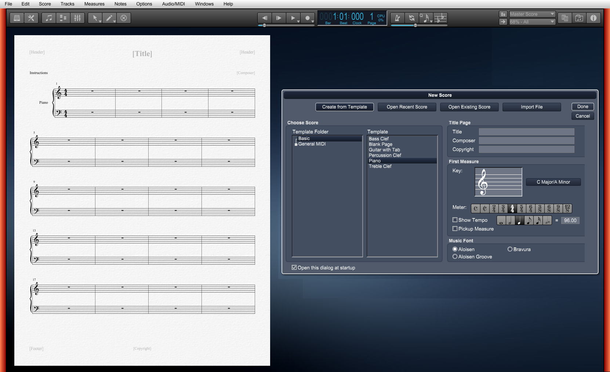

When you first open Overture a New Score dialog appears.
If the New Score dialog is not showing, use the New command from the File menu or type Ctrl[Cmd] N to open the dialog.

Note: If you click on a Overture score or template a preview of the score will be shown to the left of the dialog.
The New Score dialog provides four methods of creating a new score: